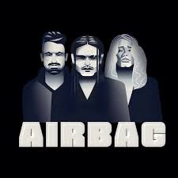

Airbag es una banda argentina de rock fundada en Don Torcuato, Gran Buenos Aires, en el año 1999. La banda fue fundada e integrada por los hermanos Sardelli, donde empezaron con los primeros ensayos a mediados de los años noventa bajo el nombre de Los Nietos de Chuck, donde hacían covers de Chuck Berry, The Beatles y Creedence, entre otros.
Hola! En esta pagina hablaremos sobre la banda de rock Airbag